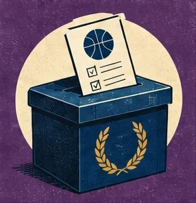

The Voters and the Model
Twenty-six years of MVP and All-NBA ballots, next to a model that has never watched a game. Where they part ways, and what the voters are paying for when they do.

In 2010-11, Derrick Rose became the youngest MVP in the league’s history. He was 22, the Bulls won 62 games, and the voters gave him 98% of the possible points. The model, which has never watched a game, had him 28th in the league that season.
That’s the widest gap between the voters and the model since 1999-00. It isn’t the only one. Every spring a panel of 100 writers and broadcasters picks the MVP and the fifteen All-NBA players. They watch more basketball than I do, and I envy them for it. The model picks from what happened to the score while each player was on the floor. This column puts the two side by side, for this season and the 26 before it.
Modeling the voters isn’t a new idea. Basketball-Reference’s MVP Award Tracker ranks each season’s candidates with a model built on past ballots, to predict who will win. This is the other question: where a measure of what a player is worth and the people holding the ballots part ways, and what the voters are paying for when they do.
The rules
The model’s MVP is the player with the most Marginal WAR (mWAR): the wins he added above the kind of player any team can sign for the minimum, counting only the games he played. Its All-NBA is its top fifteen, with no positions, which is how the voters do it now too.1
Two confessions first. The model isn’t a referee. A star’s rating carries an error of about 0.85 points per 100 possessions, two or three wins over a season, so when the top two are close it can’t really tell them apart. The voters also see things it doesn’t: who the other team built its defense to stop, and who took the shot when the clock ran down. The second confession: I’m from Boston, and this year’s biggest split runs through a Celtic and a former one.
Twenty-six MVPs
From 1999-00 to 2024-25, the model and the voters picked the same MVP 11 times in 26.
The model’s MVPs come in runs. Kevin Garnett was its MVP five seasons running, 2002-03 to 2006-07; the voters gave him one, in 2003-04. LeBron James was its pick eight times, the voters’ four. Nikola Jokić has been its MVP every season since 2018-19, this one included; the voters have given him three. Here are the fifteen seasons they split:
| Season | Voters’ MVP | Model rank | Pts | Wins | Model’s MVP | Pts | Wins |
|---|---|---|---|---|---|---|---|
| 2000-01 | Allen Iverson | 21 | 31.1 | 56 | Tim Duncan | 22.2 | 58 |
| 2002-03 | Tim Duncan | 2 | 23.3 | 60 | Kevin Garnett | 23.0 | 51 |
| 2004-05 | Steve Nash | 9 | 15.5 | 62 | Kevin Garnett | 22.2 | 44 |
| 2005-06 | Steve Nash | 6 | 18.8 | 54 | Kevin Garnett | 21.8 | 33 |
| 2006-07 | Dirk Nowitzki | 6 | 24.6 | 67 | Kevin Garnett | 22.4 | 32 |
| 2007-08 | Kobe Bryant | 5 | 28.3 | 57 | LeBron James | 30.0 | 45 |
| 2010-11 | Derrick Rose | 28 | 25.0 | 62 | LeBron James | 26.7 | 58 |
| 2013-14 | Kevin Durant | 3 | 32.0 | 59 | LeBron James | 27.1 | 54 |
| 2014-15 | Stephen Curry | 2 | 23.8 | 67 | Chris Paul | 19.1 | 56 |
| 2016-17 | Russell Westbrook | 7 | 31.6 | 47 | Stephen Curry | 25.3 | 67 |
| 2017-18 | James Harden | 6 | 30.4 | 65 | LeBron James | 27.5 | 50 |
| 2018-19 | Giannis Antetokounmpo | 7 | 27.7 | 60 | Nikola Jokić | 20.1 | 54 |
| 2019-20 | Giannis Antetokounmpo | 6 | 29.5 | 63 | Nikola Jokić | 19.9 | 52 |
| 2022-23 | Joel Embiid | 3 | 33.1 | 54 | Nikola Jokić | 24.5 | 53 |
| 2024-25 | Shai Gilgeous-Alexander | 2 | 32.7 | 68 | Nikola Jokić | 29.6 | 50 |
Model rank is where the model had the voters’ MVP that season. Pts is points per game; Wins is his team’s, per 82 games, so the shortened seasons compare.
After Rose, the widest gap is Allen Iverson in 2000-01, whom the model had 21st. Most of the rest are closer than they look: in twelve of the fifteen, the voters’ MVP was in the model’s top seven.
What the voters pay for
All fifteen splits have something in common: the voters’ MVP scored more than the model’s, or his team won more, and usually both. He outscored the model’s pick eleven times and outwon him thirteen. On average he scored 27.2 points a game to 24.1, for a team on pace for 60 wins to 50.
One award a year is a small sample, so I checked the All-NBA ballots too: the 60 best players by mWAR every season, 1,558 player-seasons in all, and their share of the All-NBA vote. mWAR alone goes a long way. Hold it fixed, though, and scoring and winning still pay. To the voters, a point a game is worth about 0.5 mWAR, and ten more team wins about 1.7.2 Five more points a game is worth about the gap between the league’s tenth-best player and its twentieth.
Whether that’s overrating depends on who’s right. The model’s case: points and wins are already in the score while he’s on the floor, so counting them again counts them twice, and a player who scores 30 and gives back 30 hasn’t helped. The voters’ case: a plus-minus rating is noisy, and points and wins are the surest numbers in the sport; when one measure is noisy, leaning on the sure ones isn’t a mistake. The award also says valuable, and the word is the voters’ to define.
Totals, not rates
The model keeps two kinds of number: mPM is a rate, how good a player was per 100 possessions, and mWAR is the total, the rate times how much he played. The voters go with the total. Among those top 60, mWAR alone explains 46% of the All-NBA vote and the rate 36%, and adding the rate to the total adds nothing.3 On this, the voters and the model agree: a great player who misses a third of the season gets less credit than a very good one who doesn’t. Since 2023-24 the league has made it a rule: 65 games, or no award.
This season
The voters gave the 2025-26 MVP to Shai Gilgeous-Alexander, with 94% of the possible points, and put Jokić second. The model has them the other way round: 19.7 mWAR for Jokić, 17.5 for Gilgeous-Alexander, from the rating per possession, +7.36 to +6.28, over a similar number of games. It’s the shape from the table again: Gilgeous-Alexander scored 31.1 a game to Jokić’s 27.7, and Oklahoma City won 64 games to Denver’s 54.
For All-NBA, the voters and the model agreed on twelve of fifteen:
| All-NBA | Player | Model rank | mWAR | Salary | Surplus |
|---|---|---|---|---|---|
| 1st | Nikola Jokić | 1 | 19.7 | $55M | +$132M |
| 1st | Shai Gilgeous-Alexander | 2 | 17.5 | $38M | +$130M |
| 1st | Victor Wembanyama | 3 | 13.8 | $13M | +$122M |
| 1st | Luka Dončić | 6 | 12.2 | $46M | +$75M |
| 1st | Cade Cunningham | 14 | 9.9 | $46M | +$53M |
| 2nd | Donovan Mitchell | 4 | 12.9 | $46M | +$81M |
| 2nd | Kevin Durant | 5 | 12.6 | $55M | +$70M |
| 2nd | Kawhi Leonard | 7 | 12.0 | $50M | +$69M |
| 2nd | Jalen Brunson | 9 | 11.6 | $35M | +$80M |
| 2nd | Jaylen Brown | 78 | 4.6 | $53M | −$5.0M |
| 3rd | Tyrese Maxey | 8 | 11.7 | $38M | +$78M |
| 3rd | Chet Holmgren | 11 | 11.0 | $14M | +$96M |
| 3rd | Jamal Murray | 12 | 10.2 | $46M | +$56M |
| 3rd | Jalen Johnson | 39 | 6.6 | $30M | +$38M |
| 3rd | Jalen Duren | 85 | 4.4 | $6.5M | +$40M |
Model rank in bold where the voters’ pick is outside the model’s fifteen. Surplus is what he was worth beyond his pay, 2025-26.
Jaylen Brown made the second team and finished sixth in the MVP vote. The model has him 78th. What the voters saw is real: his usage rate, 35%, was the league’s second-highest, and carrying an offence is hard. What the model saw is the score while he did it. His rating has sat within a few tenths of average for three seasons running, +0.21 → −0.04 → +0.21 per 100 possessions,4 and on a max contract he was worth $5.0M less than he was paid. Boston traded him to Philadelphia in July. I wanted them to keep him, for reasons that aren’t in this table.
Jalen Duren and Jalen Johnson made the third team; the model has them 85th and 39th. Here the argument is about timing. Johnson’s rating rose each season, −0.33 → +0.60 → +0.98; Duren’s turned positive only this year, −0.30 → −0.23 → +0.56. The model weighs three seasons, so it is slow to believe a jump. The voters saw the jump.5
The model’s three, Derrick White, Desmond Bane and Amen Thompson, made no team. White made the All-Defensive first team, so the voters noticed him, just not enough. Bane played every game. Thompson, still on his rookie deal, was worth $90M more than he was paid; his twin brother Ausar made an All-Defensive team. The voters’ three scored 23.6 points a game between them, on average; the model’s three, 18.3. After 26 seasons of ballots, that isn’t a surprise. I’d like it noted that one of the model’s three is a Celtic.
The ledger
Six All-NBA picks go in the ledger: the voters’ Brown, Duren and Johnson, and the model’s White, Bane and Thompson. Next spring I’ll check which held up, on both sides, and put the 2026-27 MVP vote next to the board. Every split since 1999-00 has had the same shape, the voters’ MVP scoring more or winning more. If they split again, that’s the first thing I’ll look at.
Figures: the board, 1999-00 to 2025-26, as of this build; awards, points per game and standings from Basketball-Reference. Wins are on this model’s own scale and dollars at the open-market price of a win; the method explains both.
- mWAR is Marginal Plus Minus (mPM), a rating per 100 possessions, times how much he played. The metrics column has how it does against everyone else’s numbers. ↩
- Least squares of each player’s share of the possible All-NBA points on his mWAR, points per game, team wins per 82 games and games played. Resampling whole seasons 2,000 times, the middle 90% runs from 0.46 to 0.61 mWAR a point, and 1.5 to 1.9 per ten wins. Games played add nothing once mWAR is in. ↩
- R² of 0.459 for mWAR alone and 0.460 with mPM added; the rate’s p-value is 0.41. ↩
- Each with a standard error of at least 0.75: the model is far from certain about any one of them, but three in a row is a pattern. ↩
- Duren’s next contract isn’t on file yet. When it is, it will say whether the market priced the voters’ Duren or the model’s. ↩